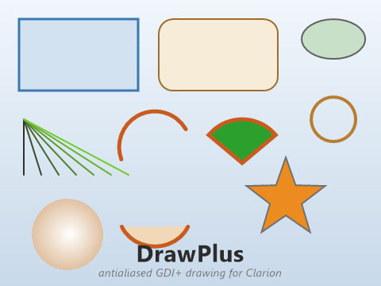
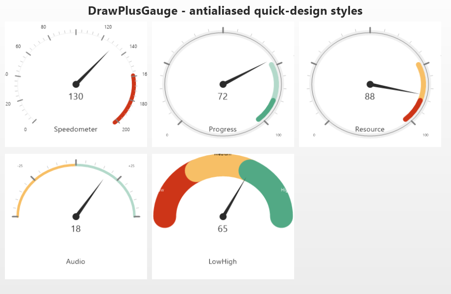

DrawPlus
An antialiased, GDI+-backed 2D drawing canvas for Clarion — the smooth sibling of CapeSoft Draw. Drive an IMAGE control with code-drawn graphics (boxes, ellipses, arcs, polygons, gradients, text) where every primitive is rendered with vector antialiasing and crisp AA text.
ABC + Legacy IMAGE No redistributable gdiplus.dll ships with WindowsOverview #

CapeSoft Draw rasterises into its own software bitmap; its lines,
arcs and ellipses are not antialiased. DrawPlus draws the same
everyday primitives, but through GDI+ with SmoothingModeAntiAlias
and antialiased text, so curves and diagonals are smooth.
The object paints into an off-screen 32-bit ARGB bitmap, saves it to a PNG in
%TEMP%, and points your IMAGE control at that PNG. Because the art
lives in the IMAGE, it survives repaints and prints with no extra work, and
there is nothing to redistribute — gdiplus.dll has shipped
with every Windows since XP, and DrawPlus binds to it at runtime.
How it works #
- dpcanvas.c — a tiny C shim that binds the GDI+ flat API at
runtime (
LoadLibrary/GetProcAddress) and exposes a small immediate-mode drawing surface. Clarion compiles it automatically via aPRAGMA('compile(dpcanvas.c)')inside the class — no project step, no import library (Clarion can't link MSVC COFF libs anyway). - DrawPlusClass — the Clarion object. It owns one canvas, holds the pen /
fill / font state, and exposes the drawing API (
Box,Arc,Show, …).Display()saves a PNG and loads it into the IMAGE. - DrawPlus.tpl — the templates that wire the object to an IMAGE control on
a window and call
Init/Display/Killfor you, and give you a Drawing code embed.
Display() alternates between two temp files
(dplus_<feq>_a.png / _b.png) so the IMAGE always
sees a new filename and reliably reloads — no stale-cache flicker.Install & files #
Copy these three files (shipped beside DrawPlus.tpl) to a folder on
the Clarion redirection path — the app folder or
\Clarion12\accessory\libsrc\win. All must be ANSI (not UTF-8):
| File | Role |
|---|---|
DrawPlusClass.inc | Drawing class header — the API you call. |
DrawPlusClass.clw | Implementation; hosts & auto-compiles dpcanvas.c. |
DrawPlusGauge.inc / .clw | The gauge class (for the DrawPlusGauge control); INCLUDEs DrawPlusClass.INC. |
dpcanvas.c | GDI+ rendering shim. Compiled for you by the PRAGMA. |
Register DrawPlus.tpl in the Template Registry
(\Clarion12\accessory\template\win\DrawPlus.tpl). You only ever
INCLUDE('DrawPlusClass.INC'); it pulls the rest in.
Global extension — GloDrawPlus #
Add once at the application (global) level. It emits
INCLUDE('DrawPlusClass.INC'),ONCE at %AfterGlobalIncludes.
It is optional if you only use the control template (which is self-contained), but
it's the clean place to declare the class once for an app that also calls DrawPlus
by hand from source procedures.
Control template — DrawPlus #
The easy path. Drag it onto a window and it drops a ready-made IMAGE and
wires everything up. It is MULTI (drop several per window — each gets
its own object and IMAGE) and self-contained (it INCLUDEs the class itself, so the
global extension is not required).
On EVENT:OpenWindow it sets your default pen/font, calls
Init(Window, ?Image), and posts the first repaint. On
EVENT:Sized it repaints at the new size. Each repaint runs a generated
DrawScene:<Object> routine:
! generated for you — you fill the embed in the middle DrawScene:Drawer ROUTINE Drawer.Resize() ! fresh, blanked canvas at the control's size ! <<< your "DrawPlus: Drawing code" embed runs here >>> Drawer.Display() ! save PNG + show it in the IMAGE
So in the Drawing code embed you just draw — no Init/Clear/Display bookkeeping.
Call DO DrawScene:Drawer yourself anytime your data changes and you want
to repaint.
Gauge control — DrawPlusGauge #

The GDI+ sibling of CapeSoft Draw's DrawGauge control — an antialiased
circular gauge. Drag it onto a window and it drops an IMAGE and wires up a
DrawPlusGaugeClass object: colour arc bands, radial ticks
with labels, a value-ranged needle, a centre hub and title / value text.
It is MULTI and self-contained.
It keeps Draw's conventions so values and presets transfer: angles are tenths of a degree (0–3600, 0 = 3 o'clock, counter-clockwise) and the five quick-design styles match Draw's — Progress, Resource, Audio, Speedometer and Low/Medium/High (shown). A style fills in the bands and ticks for you; the Circles and Ticks tabs add your own on top.
Driving it
Pick a style on the General tab, set the needle's angle/value range on the Needle tab, and bind a value field (polled live, repainting when it changes) or an initial value. To build a custom gauge in code:
Speedo.SetPadding(8,8,8,8) Speedo.Design(DrawPlusGauge:Speedometer) ! or AddCircle / AddTicks by hand Speedo.SetNeedleRange(450, 3150, 0, 200) ! min/max angle (tenths), min/max value Speedo.AddCircle(2610, 3150, 01835CDh, 8, 1) ! a red band near the top end Speedo.AddTicks(450, 3150, 270, color:gray, 2, -6, 10, '0~50~100~150~200', -25) Speedo.DrawGauge(140) ! render + show
Key methods: Init(Window, ?feq), SetPadding(l,r,t,b,semi),
Design(style), AddCircle(start, end, color, width, offset),
AddTick(...) / AddTicks(from, to, by, …, '~labels~', …),
SetNeedleRange(minA, maxA, minV, maxV), SetNeedleValue(v),
DrawGauge(<v>), TakeEvent() (poll a bound
NeedleValuePtr), Resize(). Ships in
DrawPlusGauge.inc/.clw (which INCLUDEs DrawPlusClass.INC).
Prompt reference #
| Prompt | Default | Meaning |
|---|---|---|
| Object name | Drawer<n> | The DrawPlusClass instance for this canvas. |
| Class name | DrawPlusClass | Override only if you subclass. |
| Background color | White | What Resize()/Blank() clears to. |
| Background transparent | off | Clears to fully transparent instead (alpha 0). |
| Global opacity | 255 | Alpha (0–255) applied to every colour you draw. |
| Redraw on resize | on | Repaint when the control is resized. |
| Pen color / width | 0x303030 / 1 | Starting outline colour and width (px). |
| Round line caps | on | Rounded vs flat ends for Line/Arc. |
| Font name / size / color | Segoe UI / 16 / 0x303030 | Starting font for Show. Size is the em height in pixels. |
| Bold / Italic | off | Starting font style. |
Coordinates & colors #
- Coordinates are pixels, origin top-left
(0,0), x right, y down. Boxes are(x, y, width, height). - Colors are ordinary Clarion
COLORvalues — a colour equate, a0x00BBGGRRliteral, or a field. Pass-1/COLOR:Noneto mean "no fill" / "transparent". - Angles (Arc / Chord / Pie) are degrees, math convention:
0° = 3 o'clock, increasing counter-clockwise — the same as CapeSoft Draw. DrawPlus converts to GDI+'s clockwise system internally. - Fill parameters: a method's
pFillof-1means "outline only" (no fill). A value≥ 0fills with that colour; the outline is then drawn with the current pen if its colour is set and width > 0.
API reference #
Lifecycle
| Method | Purpose |
|---|---|
Init(WINDOW, SIGNED feq) | Create a canvas sized to the IMAGE control. (The template calls this.) |
Init(SIGNED feq) | Same, using the current SETTARGET window. |
Start(w, h) → BYTE | Open an off-screen canvas of an explicit pixel size (no IMAGE) — for headless rendering. |
Resize() | Rebuild the canvas at the IMAGE's current pixel size (clears it). |
Display() | Flush the canvas to the IMAGE (save PNG + show). |
SaveToFile(path) → BYTE | Write the canvas to a PNG file. 1 = ok. |
Kill() | Dispose the canvas. (The template calls this.) |
State
| Method / property | Purpose |
|---|---|
SetPenColor(color) / SetPenWidth(w) | Outline colour / width for subsequent shapes. |
SetFillColor(color) | Default fill (used by Pie when its fill = -1). |
SetFont(<name>, size=-1, color=-1, style=-1) | Font for Show. Omit/-1 keeps the current value. style = dp:Bold + dp:Italic. |
.Alpha | Global opacity 0–255 applied to every colour. |
.BackColor | Colour Blank()/Resize() clears to (COLOR:None = transparent). |
.RoundCaps | 1 = rounded ends on Line/Arc, 0 = flat. |
Primitives
| Method | Draws |
|---|---|
Blank(color=-1) | Clear the whole canvas (-1 ⇒ BackColor). |
Box(x, y, w, h, fill=-1) | Rectangle: filled if fill≥0, then outlined with the pen. |
RoundRect(x, y, w, h, ew, eh, line=-1, fill=-1) | Rounded rectangle; ew/eh = corner radii. |
Line(x, y, w, h) | Line from (x,y) to (x+w, y+h). |
LineTo(x1, y1, x2, y2) | Line between absolute endpoints. |
Ellipse(x, y, w, h, fill=-1) | Ellipse in the box; filled + outlined. |
Circle(cx, cy, r, fill=-1) | Circle centred on (cx,cy). |
Arc(x, y, w, h, startAng, endAng) | Stroked arc along the box's ellipse (math angles). |
Chord(x, y, w, h, startAng, endAng, fill=-1) | Arc closed by the chord line; filled + outlined. |
Pie(x, y, w, h, startAng, endAng, fill=-1) | Pie wedge from the centre; filled + outlined. |
Polygon(pts[1], nPts, fill=-1) | Polygon; pts is a REAL,DIM(2*n) of x0,y0,x1,y1,… |
Show(x, y, text, align=dp:AlignLeft) | Antialiased text in the current font; vertically centred on y. |
PutPixel(x, y, color=-1) | Set one exact pixel (no AA). |
ShadeBox(x, y, w, h, startColor, endColor, vertical=1) | Linear-gradient filled rectangle. |
ShadeEllipse(x, y, w, h, inner, outer) | Radial-gradient ellipse (glossy: centre → rim). |
ClipBox(x, y, w, h) / ClipReset() | Restrict drawing to a rectangle, then release it. |
3D, gradients & curves
| Method | Draws |
|---|---|
Cylinder(x, y, w, h, faceColor, edgeColor=-1) | Glossy 3D cylinder (edge auto-darkens from the face if omitted). |
Sphere(cx, cy, r, faceColor, highlight=-1) | Glossy 3D sphere with an offset highlight. |
HalfEllipse(x, y, w, h, outer, inner, orientation=dp:Top) | Shaded dome / half-disc (Top/Bottom/Left/Right). |
ShadeLine(x, y, w, h, startColor, endColor) | Gradient line (colour shifts along its length). |
RadLine(cx, cy, angle, length, startColor, endColor=-1) | Radial gradient spoke at a math angle. |
Highlight(x, y, w, h, color, intensity=40) | Translucent colour wash over a region. |
Curve(pts[1], n, tension=0.5) | Smooth cardinal spline through the points. |
Bezier(pts[1], n) | Bezier path (n = 4, 7, 10, … control points). |
Polyline(pts[1], n) | Open polyline (Polygon without the closing edge). |
SetPenStyle(dp:Dash|dp:Dot|dp:DashDot|…) | Dash style applied to subsequent strokes. |
StrWidth(text) / StrHeight(text) | Measure text in the current font (pixels). |
Radius(cx, cy, w, h, angle, color, offset, length) | Draw a spoke on an ellipse. |
Effects, images & files
| Method | Does |
|---|---|
Blur(radius) | Box-blur the whole canvas. |
Grayscale(x=0, y=0, w=0, h=0) | Desaturate a region (all-zero = whole canvas). |
Image(x, y, w, h, file, tile=0, colorMask=-1) | Load & draw a PNG/BMP/JPG/GIF; tile across the rect; key out a colour. |
ImageDimensions(*w, *h, file) | Get an image file's pixel size without drawing. |
GrabScreen(xsrc, ysrc, w, h, xdest=0, ydest=0) | Copy a rectangle of the live screen onto the canvas. |
WritePNG(path) / WriteBMP(path) | Save the canvas to a file. |
Colour helpers
| Method | Returns |
|---|---|
DarkenColor(c, pct) / LightenColor(c, pct) | Shade toward black / white by a percentage. |
Saturate(c, pct) / Desaturate(c, pct) | Push away from / toward grey. |
Blend(c1, c2, pct) | Linear mix (0 = c1 … 100 = c2). |
ColorPos(start, end, distance, pos) | The colour at pos along a range. |
RandColor() / RandColor(lightness) | A random colour (optionally near a brightness). |
Geometry helpers
| Method | Returns |
|---|---|
Dist(a, b) / Distance(x1, y1, x2, y2) | 1-D delta / 2-D euclidean distance. |
BestFit(sw, sh, mw, mh, *nw, *nh) | Scale to fit inside, preserving aspect. |
FitSmallest(sw, sh, mw, mh, *nw, *nh) | Scale to fill, preserving aspect. |
PointInPolygon(pts, n, x, y) | 1 if (x,y) is inside (call with the array bare). |
GetPointOnCircle(cx, cy, w, h, angle, *px, *py) | The point on an ellipse at a math angle. |
Clockwise(pts, n) | 1 if the vertices wind clockwise. |
Equates
dp:AlignLeft / dp:AlignCenter / dp:AlignRight ·
dp:Normal / dp:Bold / dp:Italic ·
dp:Vertical / dp:Horizontal ·
dp:Solid / dp:Dash / dp:Dot / dp:DashDot / dp:DashDotDot ·
dp:Top / dp:Bottom / dp:Left / dp:Right
Worked example #
This is exactly what you put in the control's Drawing code embed (the object,
Resize() and Display() are already supplied by the template):
! a simple "card" with a heading and a status pill Drawer.SetPenColor(0C8B49Ch) ; Drawer.SetPenWidth(2) Drawer.RoundRect(8,8, 200,120, 14,14, , 0FBF6F0h) ! filled card Drawer.SetFont('Segoe UI', 22, 02B2B2Bh, dp:Bold) Drawer.Show(22,36, 'Invoice') Drawer.Pie(120,60, 70,70, 90,90+270*pct, 02CA02Ch) ! progress wedge Drawer.SetFont(, 13, 0707070h, dp:Normal) Drawer.Show(108,112, 'Paid', dp:AlignCenter)
Start(w,h), draw, then
SaveToFile('out.png'). The shipped examples\DrawPlus\DrawPlusTest.clw
does exactly this to produce the image at the top of this page.Scope & limits #
DrawPlus covers CapeSoft Draw's drawing API — primitives, 3D shading, gradients, curves & beziers, dashed pens, text metrics, image loading (PNG/BMP/JPG/GIF via GDI+, with tiling and colour-key transparency), screen capture, Blur / Grayscale, and the colour & geometry helpers — all antialiased.
What is not included (it doesn't fit a single PNG canvas, or duplicates other accessories): layers / alpha compositing and anything layer-based (RotateLayer, AlphaCopy, …); FreeImage (DrawImage); the barcode, QR and captcha generators; the 256-colour, monitor / display, registry and GetDeviceCaps plumbing; the DrawHeader / DrawPaint companion templates; and report-band drawing. For those, keep using CapeSoft Draw. File I/O is left to StringTheory.
DrawPlus is a local accessory — built and maintained alongside the Clarion Template Maker; it is not part of the public CapeSoft distribution.